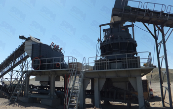

Quarry crusher equipment production line equipment used jaw crusher, impact crusher and cone crusher. Large quarry recommend quarry stone crusher machine equipment, for example, airports, railways, highways, road construction and national large bridge, tunnel, land tunnel, the new high-rise buildings and other construction, mining industry, cement industry, metallurgical industry, ceramic industry, sand and gravel industry, grinding industry, construction industry, road construction industry, and so can play its role and strong energy.
Large quarry stone production line field using mobile crusher station, will be broken stone in the yard and then transport, in particular through the belt conveyor and transported silo turn, greatly enhanced the reliability is one of the most reliable and economical stone crushing and transportation. For large-scale adoption of mobile crushing plant and quarry stone quarry production, although the higher acquisition cost of equipment, but the total cost is still the lowest in the gravel, the greater the amount of transportation, the economy, the more obvious advantages.
Quarry crushing production line project case, how much money to open a quarry, with the rise of China's economic development, real estate, roads and other industries, so that more and more urgent construction sand, gravel demand and quality of the more be higher, at present, the use of artificial sand river gravel, limestone, basalt and other beloved work together to become the first choice of the construction industry in many artificial sand making production equipment, quarry crusher equipment is the most widely application in mining machinery.
China's largest quarry equipment manufacturer has developed a series of quarries, gravel plants, stones factory crushing sand making equipment, can crushing above medium hardness ores and rocks, not only improve the performance of the device, production efficiency, service life, and more important to save investment cost. As in nearly three decades of crushing and screening equipment manufacturing enterprises, at present, quarry equipment has become the undisputed industry's most customers welcome the quarry and processing equipment, is a good choice for mining investors, in the future path of development, we will be hard skills, innovative products, new development, a new leap forward.
Live chat with our professional customer service! Get the quotation list.
Chat Now